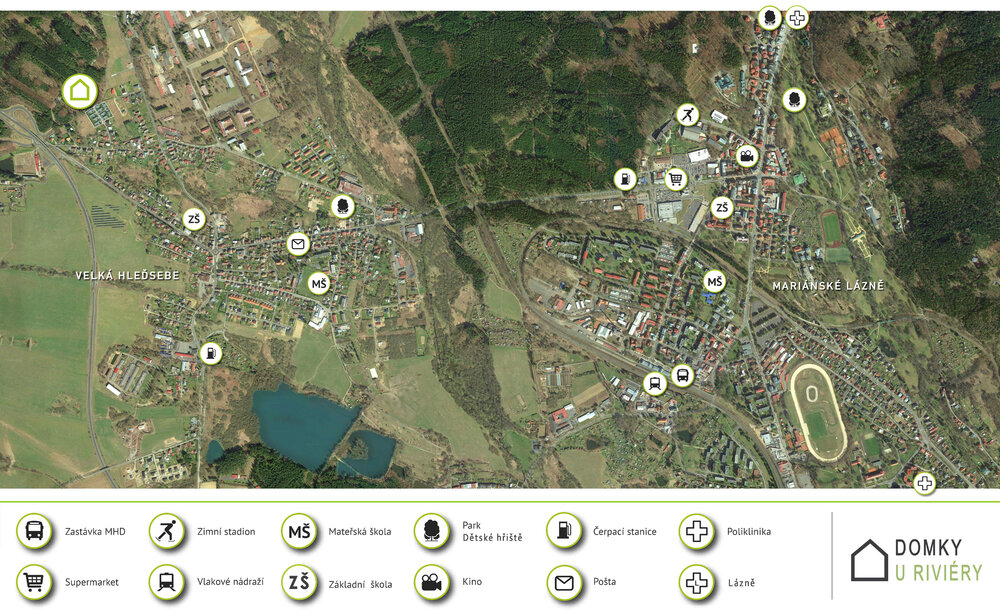

Lokalita
Zástavba 10 domů je plánovaná na severozápadním okraji v klidné lokalitě obce Velká Hleďsebe vzdálená 3,5 km od centra Mariánských Lázní.
Okolí
Obec Velká Hleďsebe je začleněna územně pod okres Cheb a náleží pod Karlovarský kraj. Leží v průměrné výšce 561 metrů nad mořem. Obec se rozkládá asi dva kilometry západně od města Mariánské Lázně a je vzdálená přibližně 10 km od německých hranic. Bližší informace o obci i jejím okolí naleznete na www.velkahledsebe.cz.

- Kompletní mapa občanské vybavenosti

Krajina
Celá oblast, ve které se obec Velká Hleďsebe nachází, se někdy z turistického hlediska nazývá také Západočeský lázeňský trojúhelník, který je tvořený lázeňskými městy Mariánské Lázně, Františkovy Lázně a Karlovy Vary. V roce 2021 byly spolu s dalšími 8 evropskými lázeňskými městy přidány na Seznam světového dědictví UNESCO. Kromě bohatého kulturního programu v Mariánských lázních, okolí poskytuje bohaté možnosti sportovního vyžití nejen pro turisty ale také např. pro milovníky cyklistiky nebo třeba golfu. V Karlovarském kraji je nyní osm funkčních golfových areálů, mezi které patří i golfové hřiště v Mariánských lázních.